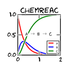

|  |
Aboutchemreac is a python library for solving chemical kinetics problems with possible diffusion and drift contributions. It is implemented by solving the deterministic Smoluchovski equation for discretized 1D symmetric systems. Wrappers around SciPy's ODE integrators and Sundials CVode package are provided. |